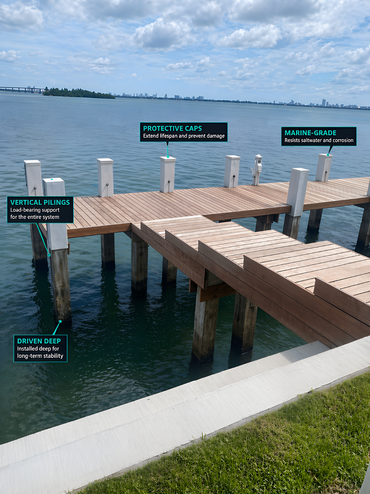

The Foundation Every Waterfront Structure Needs
Marine pilings are the unsung heroes of every great dock, seawall, and waterfront structure. Driven deep into the seabed, they carry the loads of your dock, resist tidal and boat wake forces, and provide the structural backbone that keeps everything above water standing strong for generations.
Contour Marine drives marine pilings with professional-grade equipment operated by a crew with over 25 years of South Florida experience. We know the soil conditions, the tidal ranges, and the loading requirements unique to Broward and Miami-Dade — and we install pilings that meet and exceed every standard.
- Concrete and treated timber pilings
- New piling installation for docks & seawalls
- Piling replacement and sister pilings
- Marine barge-mounted driving equipment
- Piling inspection and assessment services
- Permit acquisition — fully handled
Heavy Equipment. Expert Hands. Precise Results.
Piling installation requires the right equipment and the right expertise. Contour Marine owns and operates our marine crane barge, allowing us to reach locations that most contractors simply cannot access. This means faster project timelines, better quality control, and lower costs for our clients.
Our piling installation team has driven thousands of pilings across South Florida's diverse waterways — from the Intracoastal Waterway to residential canals and open bay exposures. Every piling is driven to the specified depth and bearing capacity, inspected, and certified before we move on.
- Marine crane barge — company-owned equipment
- Hydraulic and diesel vibratory hammer
- Pre-drilling for hard rock or coral conditions
- Piling sizing per engineered specifications
- Intracoastal, canal & bay waterway experience
- FDEP and Army Corps compliance on every project
